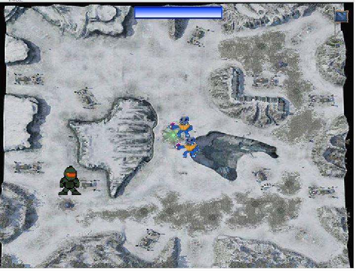
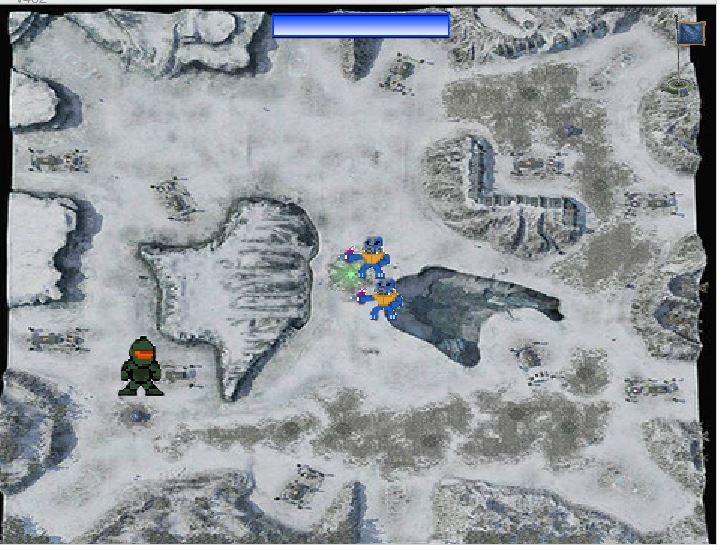

Proyecto de Scratch
El curso de Scratch fue para darnos una idea muy básica de como programar por medio de bloques que al momento de juntarlos ocasioanba que ocurriera una acción.
Características:- Fácil e intuitivo
- Nos proporcionó ideas básicas de programación
- Atractivo a la vista
- Reforzó nuestro interés por el área
 

El curso de Scratch me gustó mucho porque hizo que me interesara más en esta carrera puesto que yo soy de reacomodo e iba para mecatrónica.